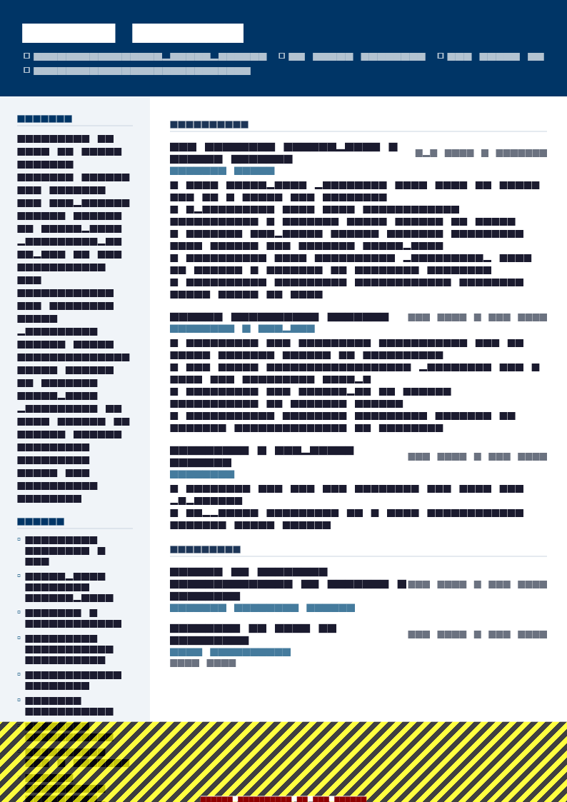

The proximity problem
Almost every weak project management resume has the same flaw: it proves the project happened, not that you ran it.
Read this bullet as a hiring manager: “Worked on a large ERP implementation across multiple business units, delivering significant efficiency improvements.” You cannot tell whether the writer owned the programme, ran one workstream, or maintained the RAID log. Nothing in the sentence attaches a decision to a person.
This matters more in project management than in most fields, because the discipline is about judgement under constraint. A hiring manager is trying to establish whether you have made hard calls at the scale they are hiring for. So the resume has to do two things: state your scale immediately, and attribute decisions to you.
A project portfolio table near the top, giving budget, duration, team size and outcome for your most significant projects — scale assessable in ten seconds.
Decision-led bullets that name a trade-off you made and what followed, rather than describing the project’s content.
Section order
- Contact
- Summary — domain, years, largest programme, one decision
- Certifications — PMP, PRINCE2, Scrum, SAFe; one line if you hold screening credentials
- Project portfolio — three to five projects with budget, duration, team, outcome
- Experience — decision-led bullets per role
- Methodology & tooling
- Education
Certifications sit high only when they function as a filter — PMP for enterprise and government, PRINCE2 for UK and EU public sector, CSM or SAFe for software delivery. Otherwise they can go near the bottom.
The summary
Proximity
Results-oriented project manager with over 10 years of experience delivering complex projects on time and within budget across multiple industries and stakeholder groups.
Ownership
PMP-certified project manager with 10 years delivering ERP and integration programmes in manufacturing. Ran a $4.2M SAP rollout across 6 plants and 3 countries, delivered two weeks early and 4% under budget. Manage vendor relationships across 9 suppliers.
“On time and within budget” is the claim every project manager makes, which makes it worthless as a differentiator. A specific budget, a specific scope and a specific variance is the same claim, evidenced.
The project portfolio table
This is the highest-value block on a project management resume and very few candidates include it. Three to five projects, one row each.
| Project | Budget | Duration | Team | Outcome |
|---|---|---|---|---|
| SAP S/4HANA rollout, 6 plants, 3 countries | $4.2M | 18 months | 34 (9 vendor) | Delivered 2 weeks early, 4% under budget |
| Warehouse management system replacement | $1.1M | 9 months | 12 | Cut order-to-dispatch from 26 to 9 hours |
| Finance shared-services consolidation | $780k | 12 months | 18 across 4 sites | Closed 3 regional functions, $1.4M annual run-rate saving |
| Customer portal replatform | $420k | 6 months | 8 | Self-serve rate up 31%, support contacts down 22% |
Then one line for the remainder: Plus 14 further delivery projects, $50k–$400k, across integration, compliance and infrastructure.
Two notes. Keep the table to plain rows — a heavily formatted grid can parse badly, so if you are worried about a strict portal, present the same content as labelled lines instead. And be honest in the Team column about how much was vendor or matrixed rather than direct reports; experienced readers ask.
Decision-led bullets
The pattern: the call you made + the constraint you made it under + what followed. This is what separates a manager from a coordinator on paper.
Describes the project
Managed the implementation of a new CRM system for the sales organisation, coordinating with stakeholders and vendors throughout the project lifecycle.
Describes your decision
Cut CRM scope from 4 modules to 2 after a 6-week discovery showed the reporting module duplicated existing BI; delivered in 5 months against an 11-month plan and returned $180k of unspent budget.
Describes the project
Responsible for managing project risks and issues, maintaining the RAID log and escalating as appropriate.
Describes your decision
Escalated a vendor resourcing risk to the steering committee in month 2 rather than month 5; the renegotiated contract added 2 developers and preserved the go-live date.
Categories of decision worth mining for material: scope you cut or defended, a schedule you rebaselined and why, a vendor or build-versus-buy call, a resourcing trade-off, a risk you escalated early, a project you recommended stopping, and a governance structure you changed.
That last category is underused. “Replaced a weekly 20-person status meeting with a written update and a 6-person decision forum, cutting meeting load by 14 hours a week across the programme” is a genuinely senior thing to have done. Verb choices in resume action verbs.


Metrics recruiters screen for
| Dimension | What to cite |
|---|---|
| Budget | Total owned, variance against baseline, savings delivered, capital versus operating split |
| Schedule | Duration, variance against baseline, number of rebaselines, milestones hit, go-live date held |
| People | Direct team, matrixed contributors, vendor headcount, stakeholder groups, steering committee level |
| Scope | Workstreams, systems integrated, sites, countries, users migrated, records converted |
| Risk & quality | Defects at go-live, rollback events, audit findings, incidents in the stabilisation window |
| Benefits | Run-rate saving, cycle time reduction, adoption rate, headcount redeployed, revenue enabled |
The two most persuasive are variance against baseline and benefits realised after go-live. Nearly everyone reports delivery; very few report what the thing achieved once live, and a project manager who tracks benefits realisation stands out immediately.
Certifications
- Project Management Professional (PMP) — PMI, 2019, renewed 2025
- PRINCE2 Practitioner — AXELOS, 2021
- Certified ScrumMaster (CSM) — Scrum Alliance, 2022
- SAFe 6 Release Train Engineer — Scaled Agile, 2024
- ITIL 4 Foundation — PeopleCert, 2023
Match the credential to the market: PMP dominates North American enterprise and government contracting; PRINCE2 and MSP are expected in UK and European public sector; Scrum, SAFe and Kanban credentials carry weight in software delivery; PMI-ACP sits between. Give the issuing body and the date, and note renewal if the credential requires it.
Skills and tooling
- Methodology: Agile (Scrum, Kanban), SAFe, waterfall, PRINCE2, hybrid stage-gate delivery
- Governance: business cases, RAID and risk registers, change control, steering committee reporting, benefits realisation tracking
- Planning: WBS, critical path, dependency mapping, resource levelling, earned value management
- Tools: Jira, Confluence, MS Project, Smartsheet, Asana, Monday.com, Azure DevOps, Miro, Power BI
- Commercial: vendor selection and RFP, SoW and contract negotiation, procurement, budget forecasting
Name the tools explicitly — they are searched. But avoid the trap of a resume that reads as tool fluency plus methodology vocabulary and contains no evidence of a decision.
IT, construction, product and programme
| Role | Foreground | Typical bullet shape |
|---|---|---|
| IT / software PM | Systems integrated, users migrated, release cadence, defects at go-live | Migrated 40,000 users across 3 domains in 6 weekend cutovers with zero rollbacks. |
| Construction PM | Contract value, programme dates, subcontractors, safety record, variations | Delivered a £12M fit-out 3 weeks early with zero RIDDOR-reportable incidents across 140,000 site hours. |
| Product PM | Users, revenue, adoption, discovery volume, decisions taken | Killed 2 roadmap items after usage analysis showed under 2% adoption, redirecting 3 engineers to a flow that lifted upgrades 23%. |
| Programme manager | Constituent projects, total budget, interdependencies, governance level | Ran a 6-project transformation portfolio, $14M total, reporting to a board-level sponsor. |
| PMO lead | Portfolio size, standards introduced, reporting cadence, assurance outcomes | Introduced portfolio-level reporting for 31 projects, reducing status reporting effort by 60 hours a month. |
| Change manager | Population affected, adoption, training delivered, resistance handled | Delivered change for a 1,200-person restructure with 91% training completion before go-live. |
If you are a product manager rather than a delivery PM, the emphasis shifts hard toward decisions and outcomes over budget and schedule — there is a worked product manager example in resume examples 2026.
Moving into project management
Most project managers arrive from an adjacent role, and the resume problem is that your title never said “project manager”. The solution is a projects block above your employment history, written with the same portfolio discipline.
Look for: a cross-functional launch you coordinated, a system migration you owned, a workstream inside a larger programme, an office move, an audit remediation, a product release you ran end to end. Any of these, described with budget or scope, duration, people involved and outcome, is project management evidence.
Add a credential to signal seriousness — CAPM or CSM are the usual entry points, PRINCE2 Foundation in the UK. Then use the hybrid structure described in career change resume: relevant projects first, full dated history underneath.
Templates

Executive Classic resume template
Executive Classic gives a project portfolio table and multi-project histories the room they need across two pages, without the sidebar layouts that break parsing. ATS 90, free.
Use this template in NextCV| Template | ATS score | Price | Best for |
|---|---|---|---|
| Executive Classic | 90 | Free | Established PMs with a multi-project portfolio to present |
| ATS Pro | 98 | Free | Enterprise and government portals where parsing safety matters most |
| Corporate Blue | 88 | Premium | Structured, authoritative layout for corporate and financial services |
| Pure White | 95 | Free | Senior programme and portfolio roles wanting restraint |
| Skills Based | 85 | Free | Moving into project management from an adjacent role |
Checklist
- Summary names domain, years, largest programme and one decision
- Project portfolio shows budget, duration, team size and outcome
- Remaining projects covered by a single summary line
- Team figures distinguish direct, matrixed and vendor headcount
- At least four bullets name a decision or trade-off you made
- Variance against baseline stated, not just “on time and on budget”
- At least one benefits-realisation figure from after go-live
- Screening certifications appear in the summary as well as the list
- Methodology described honestly, including hybrid reality
- Tools named explicitly
- Two pages, single column, text-based PDF
Frequently asked questions
What should a project manager resume include?
A summary naming your domain and largest programme, a project portfolio showing budget, duration, team size and outcome for your three to five most significant projects, then experience bullets built around decisions you made, followed by certifications, methodology and tooling.
The portfolio table is the differentiator. It lets a hiring manager assess your scale in about ten seconds, which is what they are trying to establish first.
How do I quantify project management work?
Six dimensions cover almost everything: budget owned, schedule performance against baseline, team and stakeholder counts, scope (workstreams, sites, systems, countries), risk and issue outcomes, and benefits realised after delivery.
Schedule and budget variance are the two most credible because they are verifiable and specific: “delivered two weeks early and 4% under a $4.2M budget” is a stronger claim than any adjective.
Is PMP certification necessary on a resume?
It is not universally required, but it is frequently used as a screening filter, particularly in large enterprises, government contracting and construction. If you hold it, put it in your summary as well as your certifications block.
PRINCE2 is more common in the UK, Europe and Commonwealth public sectors; Scrum and SAFe credentials matter more in software delivery. Match the credential to the market you are applying in.
Should a project manager resume list every project?
No. Choose three to five that show range and scale, and cover the rest with a summary line such as “plus 14 further delivery projects, $50k–$400k”.
A twenty-project list reads as a log rather than a portfolio, and it flattens the distinction between the programme you ran and the small piece of work you supported.
How do I show project management experience without the job title?
Name the delivery work you actually owned. Coordinating a cross-functional launch, running a system migration, or owning a workstream inside a larger programme are all project management, whatever your title said.
Write those as a projects block above your employment history, with budget, duration, team size and outcome, then let your job titles sit underneath.
Agile or waterfall — which should my resume emphasise?
Whichever the posting names, and be honest about your actual experience of both. Most real environments are hybrid, and saying so is more credible than claiming pure Agile purity.
What matters more than the label is evidence you handled the specific difficulty of each: dependency management and stage gates in waterfall, prioritisation and scope trade-offs in Agile.
NextCV Editorial
NextCV is an AI resume builder by Empire Softtech. We publish the same guidance our in-app ATS analyser is built on — seven weighted sections, 29 templates scored from 72 to 98, and no formatting advice we would not follow ourselves.